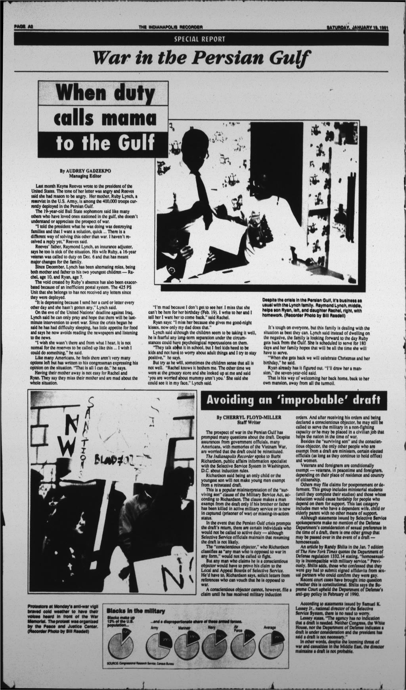

HN-789 · January 19, 1991 · War, Conflict & Security > Military Operations & Mobilization > Military deployments
Source: Indianapolis Recorder, p. 2 — original page; State Department war chronology.
Report: The Recorder interviewed Keyna Reeves, a college student whose mother, Army reservist Ruby Lynch, was deployed among U.S. forces in the Gulf. Reeves described writing to President Bush in anger about the harm deployment and possible war inflicted on families.
Assessment: A direct participant-family perspective, not a comprehensive survey of military-family opinion. Coalition air operations began January 16, following Iraq's 1990 invasion. The personal testimony is valuable precisely because it cannot be reduced to an official military timeline.
Authentic images retrieved from Hoosier State Chronicles (Indiana State Library). Article crops are located using the archive's own OCR word coordinates and rendered at native crop resolution; article clips are assembled from the archive's own article-block images; page images marked "archive tiles" are stitched from the archive's own tiled page service at its 256-px tile cap; page images marked "issue PDF" are single pages rasterised from the archive's own issue PDF, with the page chosen by matching the headline against the PDF's text layer; page scans are reduced-size access renditions. No images were generated, mocked, or retouched.

Status: Archive images acquired
Authentic archive-owned image renditions were retrieved for this record and are displayed above. The source-acquisition manifest preserves the original pre-acquisition feasibility assessment.
URL (preserved verbatim): https://newspapers.library.in.gov/?a=d&d=INR19910119-01.1.2
Saved research report: Historical_Newspaper_Event_Research_778-802_2026-10-23.md
Evidence note: A newspaper report means a historical publication made a claim; it does not establish that claim as fact. Contemporary reporting is separated from later scholarly context and our own assessment.